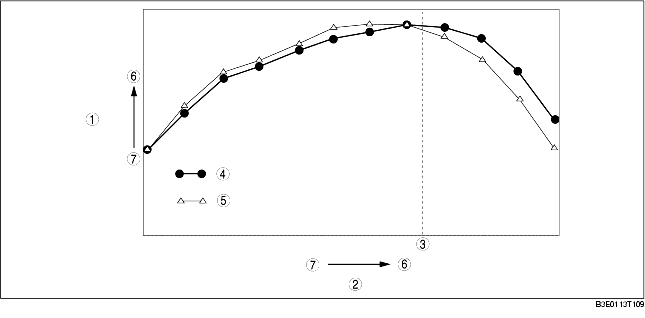

VARIABLE INTAKE-AIR SYSTEM FUNCTION [LF]
B3E011300113T15
• The variable intake air system maintains high torque from the low to high engine speed ranges.
• Changes the effective intake manifold length when the engine speed borders on 4,750 rpm to enhance the inertia charging effect. As a result, higher torque is obtained in all ranges.
• For the variable intake-air control, refer to CONTROL SYSTEM, Variable Intake-Air Control (See VARIABLE INTAKE-AIR CONTROL OUTLINE [LF].)

.
|
1
|
Engine torque
|
|
2
|
Engine speed
|
|
3
|
Approx. 4,750 RPM
|
|
4
|
Variable intake-air shutter valve open
|
|
5
|
Variable intake-air shutter valve closed
|
|
6
|
High
|
|
7
|
Low
|
Inertia charging effect
-
- Airflow in the intake air pipe pulsates according to the opening and closing of the intake valve. When the intake valve closes, intake air is compressed near the intake valve due to inertia force. The resulting pressure wave is reflected to the throttle valve side by the intake valve and the wave is then reflected back to the intake valve side when it reaches the dynamic chamber. The effective intake manifold length is controlled so that the pressure wave returns to the intake valve at the intake stroke. Due to this, air intake volume increases, resulting in higher torque.
Effective intake manifold length
-
- The effective intake manifold length is the length from the intake valve to the dynamic chamber.
-
- The effective intake manifold length changes according to the positioning of the reflected pressure wave transmitted through the intake air pipe by the opening and closing of the variable intake-air shutter valve in the intake manifold.